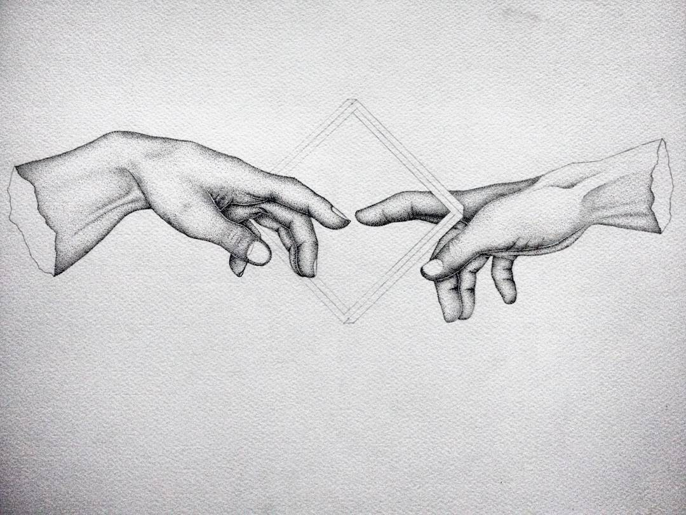

Olha só como eu acabei!
Eu juro que tive esperanças de que talvez você me notaria,
mas me enganei, me iludi achando que você mudaria.Confesso que te esperei e tentei te conquistar,
mas falhei, ou melhor você não quis mudar,mas estou bem, gostar de você foi um aprendizado.
Jamias esquecerei das mensagens que eu escrevi em sua mensagens,e das respostas que você me dava.
Foi você que me fez demonstra meu lado boila para meu amigos,e me fez ver que as pessoas não são o que parecem, mas mesmo assim obrigada.
Obrigada por permitir que eu gostasse de você! Obrigada de verdade!
Criadora: Nathalia B. da Silva
Inspiração: A cracuda da minha amiga e sua paixonite.
Acesse o Gooogle